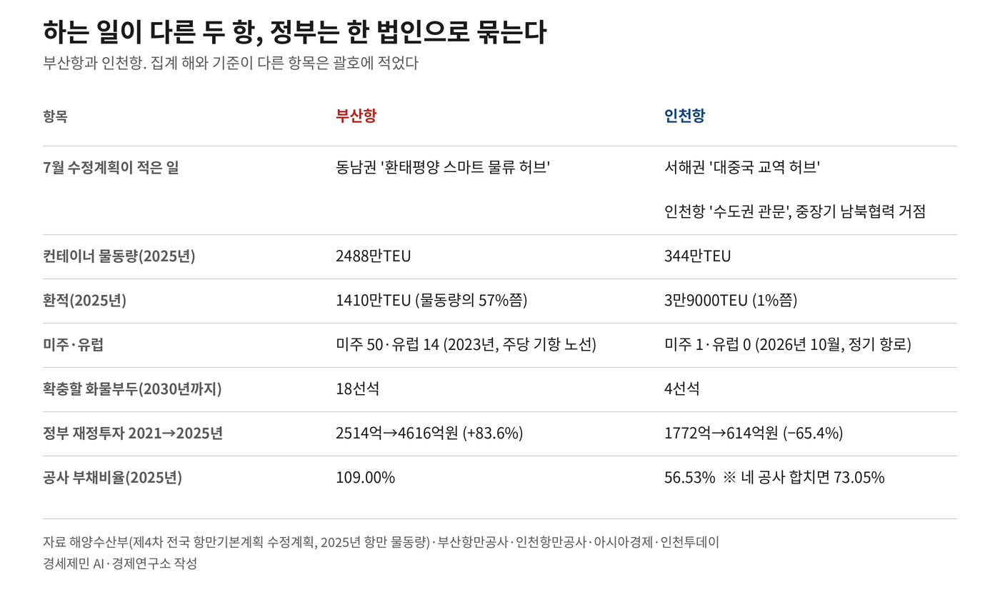
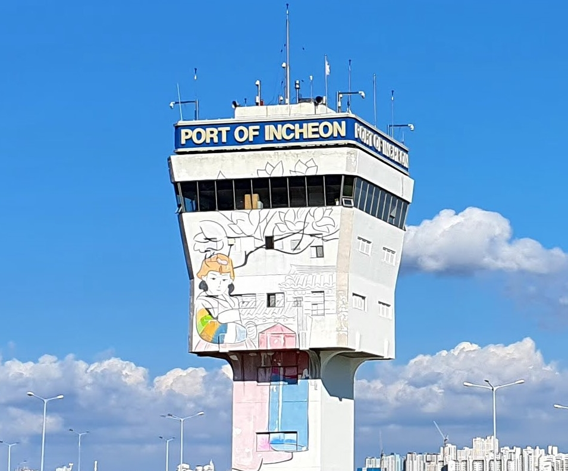

[인천해양주권⑮] 인천항 투자 65% 줄 때 부산항은 84% 늘었다
부산은 환적 57%, 인천은 수출 66%가 중국행…7월 계획도 두 항을 갈라 적었다
국감 네 번 본사 답 없어…지방 출자 넓힐 의원 발의 개정안은 0건
AI경제저널=김갑봉 기자 | 2026년 10월 23일 해양수산부 종합감사가 국회에서 열렸다. 국회 농림축산식품해양수산위원회(농해수위)의 올해 국정감사(국감) 마지막 일정이다. 종합감사는 국감 끝에 부처 전체를 다시 따지는 감사다. 9월 3일 통합 발표 뒤 50일이 지났다. 10월 6일부터 네 차례 국감에서 통합 본사 위치를 밝힌 답은 나오지 않았다.
이날 통합을 걱정하는 질의가 이어지자 황종우 해양수산부 장관은 항만공사와 전담팀(TF)을 꾸려 작업하고 있다고 답했다.
연재는 이 편으로 끝난다. 열네 편에서 짚은 숫자를 다시 모으고 부산항과 인천항이 맡은 일을 견준다. 국감에서 정부가 한 답과 항만 권한을 지방에 넘길 법 조항도 함께 본다.
1. 인천항 재정투자는 4년 새 1772억원에서 614억원으로 줄었다
9월 3일 재정경제부가 낸 공공기관 기능개혁 추진방안은 공공기관 109곳을 정비 대상으로 삼았다. 항만공사 넷도 그 명단에 들었다. 넷은 가칭 '한국항만공사'로 묶이고 지금의 공사는 본사 아래 지역지사가 된다.
같은 날 정부는 인천국제공항공사와 한국공항공사 통합은 진행 상황을 점검해 나중에 다시 따지기로 했다. 인천의 바다 관문과 하늘 관문 가운데 바다 쪽 공사만 먼저 묶었다.
인천항만공사는 2005년 7월 11일 문을 열었다. 독립 법인으로 일한 지 22년째다.
통합 발표 여덟 달 전인 2025년 12월 23일, 부산으로 간 해양수산부가 새 청사 문을 열었다.
2025년 부산항만공사 부채는 4조4121억원이다. 부채비율은 빚을 자기 돈인 자본으로 나눈 비율인데, 부산항만공사는 109.00%다. 네 공사 가운데 빚이 자본보다 많은 곳은 부산뿐이다. 인천항만공사 부채비율은 56.53%다. 네 공사 장부를 하나로 합치면 73.05%가 된다.
2021년 1772억원이던 인천항 정부 재정투자는 2025년 614억원으로 65.4% 줄었다. 부산항은 같은 기간 2514억원에서 4616억원으로 83.6% 늘었다. 정일영 더불어민주당 의원(인천 연수을)이 7월 공개한 해양수산부 자료다.
2027년도 해양수산부 예산안 8조2636억원에는 부산항 진해신항 건설비 4816억원이 들었다. 진해신항은 경남 창원시 진해구 앞바다에 새로 짓는 부산항 컨테이너 항만이다. 인천항 사업으로 보도된 것은 20억원(내항 1·8부두 재개발)과 8억원(종합발전계획 용역)이다.
인천시가 해양수산진흥원 설립에 요구한 5억원은 빠졌다. 진흥원은 인천시가 세우려는 해양수산 연구·진흥 기관이다.
해양수산부가 7월 20일 고시한 제4차 전국 항만기본계획 수정계획은 2030년까지 화물부두 110선석을 확충한다고 적었다. 같은 기간 54선석은 문을 닫는다. 선석은 배 한 척을 대는 자리다. 확충 몫은 울산항 23선석, 부산항 18선석, 광양항 16선석이고 인천항은 4선석이다.
정부안에 담긴 인천시 국비는 7조863억원으로 올해보다 9.5% 늘었다. 항만만이 아니라 시 전체 몫이다. 같은 예산안에서 정부 총지출은 12.8% 불었다.
2. 부산항은 환적이 57%, 인천항은 수출 66%가 중국행이다
정부는 9월 3일 통합 까닭으로 지역 항만 사이 연계 강화와 '과도한 경쟁' 해소를 들었다. 필자가 보기에 이 말은 네 공사가 같은 일을 나눠 맡는다는 전제에 선다.
같은 수정계획은 권역마다 다른 일을 적었다. 부산항이 있는 동남권은 '환태평양 스마트 물류 허브', 서해권은 '대중국 교역 허브'다.
계획 총괄 편 본문에는 과도한 경쟁이라는 말도, 과당경쟁이라는 말도 없다.
인천항 편은 인천항을 수도권 관문이자 환황해권 첨단물류 거점항만으로 적었다. 환황해권은 황해를 둘러싼 연안 지역이다.
해양수산부 집계로 2025년 부산항 컨테이너 물동량은 2488만TEU다. TEU는 20피트 컨테이너 한 개를 1로 세는 단위다. 이 가운데 1410만TEU가 환적이다. 환적은 한 항구에서 배만 바꿔 싣고 다른 나라로 다시 나가는 화물이다.
같은 해 인천항은 344만TEU를 처리했고 환적은 3만9000TEU였다. 부산항은 물동량의 57%쯤이 환적이고 인천항은 1%쯤이다. 전국 환적 1441만TEU의 98%가 부산항 몫이다.
동남지방데이터청은 부산항이 2025년 컨테이너 처리량 세계 7위, 환적 세계 2위라고 집계했다. 이 기관은 옛 동남지방통계청이다. 부산항만공사 집계로 2023년 이곳에 들르는 국제 정기노선은 주당 287개이고, 그 가운데 미주가 50개, 유럽이 14개다. 세계 선사의 배가 모이는 한국의 중심항(허브항)이다.
인천항은 집계 해와 단위가 다르다. 2026년 10월 인천항만공사 집계로 정기 컨테이너 항로는 72개다. 2016년 55개에서 열 해 사이 17개 늘었다. 동남아 36개, 중국 29개로 열에 아홉이다. 미주와 아프리카는 한 개씩이고 유럽 항로는 없다.
2024년 인천항 수출 컨테이너의 66.0%는 중국, 8.4%는 베트남으로 갔다. 수입은 중국이 56.2%, 베트남이 13.4%다. 인천항만공사 집계다. 인천항은 황해 건너 중국, 남쪽 바닷길로 동남아시아국가연합(아세안)을 잇는 항이다.
박신호 부산항만공사 노조위원장은 10월 6일 국회 재정경제기획위원회(재경위) 국감에 참고인으로 나왔다. 그는 "4개 항만공사는 각자 다른 기능을 가져 다투지 않는다"고 말했다. 경인일보는 부산의 컨테이너 환적, 인천의 대중국 교역, 울산의 액체화물, 여수광양의 원자재를 그 예로 들었다.

3. 1984년 북한 배는 인천 내항 갑문 안에 닿았다
1984년 9월 30일 북한 배 장산호가 남쪽 수해 복구를 돕는 시멘트를 싣고 인천 내항 4부두에 닿았다. 2004년 남북해운합의서는 해상항로를 여는 남쪽 항만에 인천을 넣었다.
이성우·신성호의 2020년 논문은 2006~2008년 남북 항만 사이 운항 횟수를 셌다. 세 해 동안 해주~인천이 2만913회로 가장 많았다.
인천 앞바다는 밀물과 썰물의 물높이 차가 최대 10m에 이른다. 물높이 차가 이렇게 크면 썰물 때 배를 대기 어렵다. 1974년 내항 입구에 갑문이 선 까닭이다. 갑문은 바닷물을 막아 안쪽 수면을 일정하게 지키는 문이다.
인천항만공사는 갑문 안 부두가 물때와 상관없이 24시간 일정한 수심을 유지한다고 설명한다. 갑문 안 수면은 151만㎡다.
시인인 김윤식 전 인천문화재단 대표이사는 내항이 365일 넓고 잔잔한 호수처럼 됐다고 적었다. 물결이 늘 잔잔한 항만 안 바다를 정온수역이라 한다.
배는 갑거 둘로만 드나든다. 갑거는 두 갑문 사이에 배를 넣고 물을 채우거나 빼 바깥 물높이에 맞추는 통로다. 인천 내항은 보안 등급이 가장 높은 '가급' 국가중요시설이다. 국가중요시설은 적에게 점령·파괴되거나 기능이 마비되면 국가안보와 국민생활에 심각한 영향을 주는 시설이다. 드나드는 차량은 안팎을 검문검색을 받은 뒤에야 들어간다.

다만 경인일보는 2025년 1월 6일 사설에서 내항 보안에 공백이 생겼다고 짚었다. 엑스선 검색 장비가 없고 검색 인력이 줄었다는 지적이다.
수정계획 인천항 편은 내항 1부두 다섯 선석과 8부두 두 선석을 기능폐쇄(재개발)로 적었다. 기능폐쇄는 화물 부두 기능을 끝내는 일이다. 인천항 편에 남북이라는 말은 '중장기적으로는 남북협력 거점항만으로 육성'이라는 한 구절뿐이다.
항만공사법 제8조는 항만 경비와 보안, 남북 항만 교류를 항만공사 사업으로 적는다. 9월 발표대로 지금의 공사가 지역지사가 되면 이 사업을 맡는 법인은 통합 법인이 된다.
4. 국감 네 번, 본사 답은 없었다
첫 국감은 10월 6일 재경위였다. 이준석 개혁신당 의원(경기 화성을)은 통합하면 본사가 무조건 부산으로 가는 것 아니냐고 물었다. 이형일 부총리 겸 재정경제부 장관은 본사 자리를 밝히지 않았다. 해양수산부 중심의 통합법인설립추진단이 로드맵(단계별 추진 일정표)을 만들며 검토할 계획이라고 답했다.
두 번째는 10월 12일 해양수산부 국감이다. 김선교 국민의힘 의원(경기 여주·양평)이 통합을 물었다. 황 장관은 통합은 결정됐고 그 취지를 반영해 의견도 수렴하겠다고 답했다.
같은 날 신장식 조국혁신당 의원(비례대표)은 15년 전 보고서를 들었다. 2010년 감사원 권고 뒤 국토해양부가 중앙대 연구소에 맡긴 통합 용역이다. 연구는 합치면 예산 일부를 아낄 수 있지만 전체 시너지는 미미하다고 봤다. 시너지는 합쳐서 커지는 힘이다.
황 장관은 그사이 사정이 바뀌었다고 답했다. 항만공사 인원이 15년 새 두 배가 됐다는 설명이다. 앞서 9월 30일 해양수산부 관계자는 부산CBS 노컷뉴스에 이번 통합 효과를 새로 분석한 자료가 없다고 인정했다.
세 번째는 네 공사를 감사한 10월 19일 국감이다. 이성권 국민의힘 의원(부산 사하갑)이 국감에 앞서 받은 공사들의 의견은 모두 정부 결정과 방침을 따르겠다는 쪽이었다. 그는 공사마다 기능이 다 다른데 '짬뽕'을 시켜 놓으면 안 된다고 했다.
네 번째이자 마지막이 23일 종합감사다. 이성권 의원은 "전 세계적으로 중앙 집중에서 분권으로 나아가고 있다. 우리 정부는 역행하고 있다"고 했다.
같은 날 조승환 국민의힘 의원(부산 중·영도)은 세부 내용을 모두 검토하고 통합을 발표했어야 한다며 '개문발차 정부'를 걱정했다. 개문발차는 문을 연 채 차를 출발시킨다는 한자말이다. 채비 없이 일을 밀어붙일 때 쓴다.
김선교 의원도 이날 "다른 선진국 항만을 보더라도 분산돼 있지, 통합된 데는 별로 없다"고 했다. 황 장관은 항만의 경쟁력을 떨어뜨리지 않는 방향으로 최대한 검토해 통합 방안을 만들겠다고 답했다.
이날 통합을 따진 이성권·조승환 의원은 부산이 지역구다.
5. 분권법은 사무 이양을 정했지만 항만을 넘길 조항은 없다
지방분권균형발전법 제33조 제1항은 국가가 권한과 사무를 적극적으로 지방에 넘기게 한다. 제2항은 여러 권한을 묶어 한꺼번에 넘기는 데 필요한 법적 조치를 국가가 마련하게 한다.
넘긴 사무를 처리할 인력과 재정 소요는 대통령 소속 지방시대위원회가 심의·의결한다(제63조 제9호).
제34조는 특별지방행정기관을 다룬다. 특별지방행정기관은 중앙부처가 지역에 둔 기관이고, 인천지방해양수산청이 그런 기관이다. 제34조는 이 기관 사무 가운데 지방이 하는 편이 효율적인 일은 지방자치단체가 맡게 하라고 정한다.
항만에서 길을 막는 조항은 지방자치법 제15조다. 이 조항 제4호는 지정항만을 지방자치단체가 처리할 수 없는 국가사무로 둔다. 지정항만은 국가가 지정해 관리하는 항만이다. 다만 같은 조 단서는 법률에 다른 규정이 있으면 처리할 수 있게 한다.
항만 권한을 지방에 내리려면 그 길을 여는 법률 조항이 있어야 한다.
전남광주통합특별시 설치를 위한 특별법 제19조가 그런 조항의 예다. 특별지방행정기관 사무를 관계 부처와 협의해 통합특별시에 넘길 수 있게 했다.
이 법에서 항만을 다룬 조항은 제232조다. 해상풍력용 항만을 국가관리연안항으로 지정해 달라고 요청하고, 국가가 항만기본계획을 서둘러 바꾸려 노력하라고 정하는 데 그친다.
국가관리연안항은 국가안보나 영해 관리에 중요하거나, 날씨가 나쁠 때 배가 피하는 것을 주목적으로 하는 연안항이다.
항만공사법 제6조는 지방자치단체도 공사에 출자할 수 있게 한다. 출자는 지분을 갖고 돈이나 재산을 대는 일이다.
국회 열린국회정보로 10월 26일 조회하면 22대 국회에 나온 항만공사법 개정안은 일곱 건이다. 의원이 낸 다섯 건 가운데 지방자치단체 출자를 넓히거나 항만공사를 지방공기업으로 바꾸는 안은 없다. 인천 의원이 대표로 낸 안도 없다.
법인을 합치지 않고 손발을 맞추는 장치도 있다. 항만공사법 제36조의2는 해양수산부 장관이 공사 사이 일을 협의·조정하고 항만공사운영협의회를 꾸릴 수 있게 한다. 네 공사는 2025년 9월 재무협의체도 만들었다.
합치면서도 지방이 지분을 쥔 사례가 있다. 벨기에 헨트항과 네덜란드 젤란트항만공사는 2018년 1월 합쳐 노스시포트가 됐다. 6월 말에는 두 공사를 자회사로 둔 지주회사를 세웠다. 주주는 두 나라 지방정부 여덟이다.
6. 인천은 12월, 정부는 2027년 1월을 내걸었다
인천 안의 목소리는 한 줄로 모이지 않았다.
박찬대 인천시장은 더불어민주당 시장 예비후보이던 5월 11일 내항 2~7부두 기능을 유지해 남북협력 거점항만으로 키우겠다는 구상을 밝혔다. 시장이 된 뒤 10월 7일에는 인천항 핵심 결정 권한이 줄어드는 통합에는 동의하기 어렵다고 했다. 같은 자리에서 찬반보다 실질을 살펴보자고도 했다.
인천 지역구 국회의원은 농해수위에 한 사람도 없다.
인천 지역구 의원 14명의 입장은 10월 11일 중부일보 집계로 반대 6명, 유보 2명, 무응답 6명이다.
인천시는 9월 18일 인천연구원에 대응방안 현안연구를 맡겼다. 12월까지 권한과 사무 이양 방안을 정리해 정부에 낼 계획이다. 현안연구는 당면한 문제를 몇 달 안에 다루는 단기 연구다.
항만 사무를 넘기라는 요구는 이미 나왔다. 대한민국시도지사협의회는 2025년 8월 해양항만을 포함한 여섯 분야의 지방이양 타당성을 분석해 사무를 넘겨 달라고 촉구했다. 인천경제정의실천시민연합(인천경실련)은 2026년 5월 7일 해양수산청을 지방에 이양하라고 요구했다.
정부 쪽 시계는 2027년 1월에 맞춰져 있다. 해양수산부가 그달까지 통합 일정표와 법령 개정안을 내놓을 계획이라고 데일리안이 9월 25일 보도했다.
인천항 경비와 보안은 인천항만공사 자회사인 인천항보안공사가 맡는다. 해양수산부는 네 공사의 보안 자회사를 한 기관으로 묶는 안을 견주고 있다. 특별법으로 세우는 공공기관과 공동 출자회사 둘이라고 아시아경제가 10월 22일 전했다. 이 통합기관의 출범 시점과 로드맵은 아직 정해지지 않았다고 해양수산부 관계자는 말했다.
5극3특은 초광역권 다섯과 제주·강원·전북 특별자치도 셋을 키우겠다는 정부 전략이다. 초광역권은 수도권처럼 여러 시도를 묶은 큰 생활·경제권이다.
지방시대위원회는 2025년 9월 30일 이 전략의 설계도를 의결했다. 그로부터 11개월 뒤 항만공사 넷을 본사 하나 아래 두겠다는 발표가 나왔다.
7. 열다섯 편이 확인한 사실은 세 갈래다
연재는 섬과 바다 경계에서 시작했다. 1~3편은 인천시가 확정한 섬 197개와 확정되지 않아 중국에 틈을 주는 서해 경계를 다뤘다. 해안이 복잡한 곳은 바깥 섬들을 이은 직선을 영해 기준선으로 삼고, 그 직선의 꼭짓점을 기점이라 한다.
영해법 시행령이 정한 기점 23개 가운데 마지막 23번이 북위 36도58분의 소령도다. 그 북쪽 인천 앞바다에는 기점이 없다.
4~8편은 노무현 정부가 지역 항만공사를 세운 까닭과 LH는 쪼개고 항만공사는 묶는 잣대를 짚었다. 통합으로 넘어올 부산항 빚과 침묵한 인천 정치권도 다뤘다. 9~12편은 인천 해상풍력 부두, 진흥원 예산, 해양수도 예산, 환황해와 남북 뱃길을 봤다. 13·14편은 국감과 인천시의 대응을 따라갔다.
첫째, 정부의 7월 계획은 두 항에 다른 일을 적었다. 둘째, 해양수산부가 부산으로 옮겨 간 사이 재정투자와 예산은 부산·경남으로 기울었다. 2030년까지 확충할 부두도 인천항은 4선석에 그쳤다. 셋째, 항만 권한을 지방에 내릴 법률 조항은 아직 비어 있다.
여기서부터는 필자의 판단이다.
하는 일이 다른 두 항을 한 법인으로 묶을 근거를 필자는 통합 발표 뒤 찾지 못했다. 길은 둘이라고 본다. 하나는 지방분권균형발전법 제34조에 맞춰 항만 사무를 인천시에 넘길 조항을 법률에 넣는 일이다. 다른 하나는 항만공사법 제6조대로 인천시가 출자해 지분을 갖는 일이다.
필자는 드나드는 길이 갑거 둘뿐인 갑문 안 내항이 북한 배를 맞기에 가장 안전한 자리라고 본다. 항만에서 남북교류를 누가 맡느냐는 통합의 한 쟁점이다. 내항의 정온수역과 보안을 빼고 말하는 남북교류는 허상이다.
인천항 갑문은 1974년 5월 10일 준공됐고 올해 5월 52년을 맞았다. 그 문 안 내항 4부두에 북한 배가 닿은 지는 42년이 지났다.
참고문헌
- 박장호·윤귀호·최정호(2026), 「서해 연안 영해기점 미설정에 관한 비판적 고찰」, 『해사법연구』 38(1), 227~272쪽. https://www.kci.go.kr/kciportal/ci/sereArticleSearch/ciSereArtiView.kci?sereArticleSearchBean.artiId=ART003321469
- 이성우·신성호(2020), 「선박입출항 데이터를 활용한 남북 항만 간 해상운송 현황 분석」, 『한국항만경제학회지』 36(4), 53~74쪽. https://doi.org/10.38121/kpea.2020.12.36.4.53
- 『지방자치분권 및 지역균형발전에 관한 특별법』 제33조 권한이양 및 사무구분체계의 정비 등, 제34조 특별지방행정기관의 정비, 제63조 기능. 법률 제21544호, 2026.10.15. 시행. 국가법령정보센터, 2026.10.26. 조회. https://www.law.go.kr/법령/지방자치분권및지역균형발전에관한특별법
- 『지방자치법』 제15조 국가사무의 처리 제한. 법률 제21544호, 2026.10.15. 시행. 국가법령정보센터, 2026.10.26. 조회. https://www.law.go.kr/법령/지방자치법
- 『항만공사법』 제6조 출자, 제8조 사업, 제36조의2 항만공사운영협의회. 법률 제21467호, 2026.09.18. 시행. 국가법령정보센터, 2026.10.26. 조회. https://www.law.go.kr/법령/항만공사법
- 『전남광주통합특별시 설치를 위한 특별법』 제19조 특별지방행정기관 사무의 이관기준 등, 제232조 항만지정 및 개발 특례. 국가법령정보센터, 2026.10.26. 조회. https://www.law.go.kr/법령/전남광주통합특별시설치를위한특별법
- 『영해 및 접속수역법 시행령』 [별표 1] 직선을 기선으로 하는 수역과 그 기점. 국가법령정보센터, 2026.10.26. 조회. https://www.law.go.kr/법령/영해및접속수역법시행령
- 『통합방위법』 제2조 제13호(정의), 제21조 국가중요시설의 경비·보안 및 방호. 국가법령정보센터, 2026.10.26. 조회. https://www.law.go.kr/법령/통합방위법
- 『항만법』 제3조 항만의 구분 등. 국가법령정보센터, 2026.10.26. 조회. https://www.law.go.kr/법령/항만법
- 『정부조직법』 제3조 특별지방행정기관의 설치. 『해양수산부와 그 소속기관 직제』 제2조. 『국가데이터처와 그 소속기관 직제』 [별표 1]. 국가법령정보센터, 2026.10.26. 조회. https://www.law.go.kr/법령/정부조직법
- 『남북해운합의서』 제4조 항로개설, 2004.05.28. 통일부 남북회담본부. https://dialogue.unikorea.go.kr/ukd/a/ad/usrtaltotal/View.do?id=513
- 국회 열린국회정보, 22대 국회 「항만공사법」 의안 목록(의안정보 API), 2026.10.26. 조회. https://open.assembly.go.kr/portal/openapi/TVBPMBILL11?Type=json&AGE=22&BILL_NAME=항만공사법
- 해양수산부(2026), 『제4차 전국 항만기본계획 수정계획(2026~2030)』, 해양수산부 고시 제2026-80호, 2026.07.20. https://www.mof.go.kr/doc/ko/selectDoc.do?docSeq=67502&menuSeq=375&bbsSeq=9
- 해양수산부 기획조정실(2026), 「2027년 해수부 정부 예산안 8.3조 원 편성」 보도자료, 2026.09.01. KDI 경제정보센터 전재. https://eiec.kdi.re.kr/policy/materialView.do?num=286135
- 해양수산부(2026), 「2025년 전국 항만 물동량」 발표, 2026.01.29.
- 김진환(2026), "해양수산부, 2025년 전국 항만 물동량 15억 7,101만 톤 처리", 『뉴스서울』, 2026.01.29. https://www.newsseoul.co.kr/news/view/1065583216092230
- 지방시대위원회(2025), 「수도권 일극에서 '5극3특'으로, 대한민국 성장지도 바뀐다」 보도자료, 2025.09.30. KDI 경제정보센터 전재. https://eiec.kdi.re.kr/policy/materialView.do?num=271787
- 인천항만공사(2026), 「정기 컨테이너 노선」, 2026년 10월 기준, 2026.10.26. 조회. https://www.icpa.or.kr/main.do?menuKey=1942
- 인천항만공사(2024), 「우리나라 경제발전의 원동력 인천항 갑문 준공 50주년 맞아」 보도자료, 2024.05.01. https://www.icpa.or.kr/article/view.do?articleKey=27360&boardKey=213&menuKey=397¤tPageNo=1
- 부산항만공사(2023), 「'23년 부산항 기항 국제 정기노선 주당 287개」 보도자료, 2023.06.21. https://www.busanpa.com/kor/Board.do?mode=view&idx=30172&mCode=MN1445
- 인천경제정의실천시민연합(2026), 「[성명] 해수부 부산 이전에 따른 '지역 편중' 대책은 "해양수산청 지방 이양"」, 2026.05.07. https://ccej.or.kr/posts/VntwEjo
- 서보혁(2013), 「대남 수재물자 지원」, 『한국민족문화대백과사전』, 한국학중앙연구원, 2026.10.26. 조회. https://encykorea.aks.ac.kr/Article/E0073377
- North Sea Port(2026), 「Shareholders」, 2026.10.26. 조회. https://www.portofghent.be/fusion-port
- ESPO(2018), 「Port Pro of the Month」(Daan Schalck·Jan Lagasse), 2018.08.31. https://espo.be/news/port-pro-of-the-month-daan-schalck-and-jan-lagasse
- Dry Cargo International(2018), 「Port of Ghent and Zeeland Seaports merge to form North Sea Port」, 2018.03.01. https://www.drycargomag.com/port-of-ghent-and-zeeland-seaports-merge-to-form-north-sea-port
- 라다솜(2026), "[여의도 바투서기] 공공기관 이전·통합, 인천 정치권 시험대", 『인천일보』, 2026.10.25. https://www.incheonilbo.com/news/articleView.html?idxno=1335044
- 박진홍(2026), "'세계 흐름에 역행' 항만공사 통합, 국감서 논란 이어져", 『부산CBS 노컷뉴스』, 2026.10.23. https://www.nocutnews.co.kr/news/6596230
- 임준환(2026), "'분권 역행하는 항만공사 통합' … 국감서 '미래 안 보이는 정책' 비판", 『뉴데일리』, 2026.10.23. https://biz.newdaily.co.kr/site/data/html/2026/10/23/2026102300294.html
- 투어코리아(2026), "국회 농해수위, 해수부 종합감사 끝으로 2026년 국정감사 완료", 『투어코리아』, 2026.10.23. https://www.tournews21.com/news/articleView.html?idxno=146552
- 강나훔(2026), "4대 항만공사 보안 자회사 '한 지붕'으로…통합 公기관 설립 검토", 『아시아경제』, 2026.10.22. https://view.asiae.co.kr/article/2026102114434417073
- 박진홍(2026), "'짬뽕시켜 놓으면 되나' 항만공사 통합 국감서 또 도마에", 『부산CBS 노컷뉴스』, 2026.10.20. https://nocutnews.co.kr/news/6593877
- 김도윤·인투아이(2026), "항만공사 통합 앞에 입 닫은 사장들···국감서 '경쟁력 추락' 책임론", 『인천투데이』, 2026.10.20. https://www.incheontoday.com/news/articleView.html?idxno=325160
- 인투아이·박규호(2026), "인천항 중장기 발전계획 수립 추진··· 정부 예산안 8억원 반영", 『인천투데이』, 2026.10.20. https://www.incheontoday.com/news/articleView.html?idxno=325184
- 뉴시스(2026), "'항만공사 통합, 글로벌 흐름 역행'…국감서 항만공사 사장들 '책임론' 제기", 『한국무역협회』 전재, 2026.10.19. https://www.kita.net/board/totalTradeNews/totalTradeNewsDetail.do?no=105421&siteId=1
- 박창우(2026), "[2026 국감] '항만공사 통합은 결정됐다'는 해수부 … 인천시와 지역 정치권 대응 시험대", 『인천뉴스』, 2026.10.13. http://www.incheonnews.com/news/articleView.html?idxno=441615
- 박창우(2026), "[2026 국감] 신장식 '효과 분석도 없이 항만공사 통합?' … 인천항 독립 운영권 논란 확산", 『인천뉴스』, 2026.10.12. http://www.incheonnews.com/news/articleView.html?idxno=441610
- 장정욱(2026), "[2026 국감] 황종우 'PA 통합 효과분석 15년 전 일…인원·물류 상황 달라져'", 『데일리안』, 2026.10.12. https://www.dailian.co.kr/news/view/1700435
- 노선우(2026), "인천 국회의원 다수 '항만공사 통폐합' 무관심·회피...6명만 반대", 『중부일보』, 2026.10.11. https://www.joongboo.com/news/articleView.html?idxno=363738923
- 박규호(2026), "박찬대 인천시장 '인천항 핵심 결정 권한 줄이는 항만공사 통합 동의 못해'", 『인천투데이』, 2026.10.07. https://www.incheontoday.com/news/articleView.html?idxno=324582
- 유진주(2026), "[재정경제부 국감] '실익 없고 근거 부족'… 인천 등 전국 4개 항만공사 통폐합 추진 정부 질타", 『경인일보』, 2026.10.06. https://www.kyeongin.com/article/1772057
- 김현구(2026), "[2026 국감] '흑자인데 왜 통합?'…4대 항만공사 실익·본사 위치 놓고 공방", 『뉴스핌』, 2026.10.06. https://www.newspim.com/news/view/20261006001110
- 박진홍(2026), "4대 항만공사 통합 발표 전 '효과 분석'도 없었다…이어지는 논란", 『부산CBS 노컷뉴스』, 2026.09.30. https://www.nocutnews.co.kr/news/6585015
- 우제성(2026), "인천시, 항만공사 통합 대응 착수…인천항 운영 자율성 확보 추진", 『기호일보』, 2026.09.28. https://www.kihoilbo.co.kr/news/articleView.html?idxno=3036015
- 장정욱(2026), "항만공사 통합·북극항로 경제성…여야 난타전 예상 [미리보는 국감-해양수산]", 『데일리안』, 2026.09.25. https://www.dailian.co.kr/news/view/1694142/
- 김도윤·인투아이(2026), "인천시 국비 약 7조원 확보···행정체제개편·광역버스 예산 빠져", 『인천투데이』, 2026.09.07. https://www.incheontoday.com/news/articleView.html?idxno=323275
- 최연훈(2026), "인천시 국비 첫 '7조원 시대'…내년 정부안 7조 863억원 역대 최대", 『주간한국』, 2026.09.07. https://weekly.hankooki.com/news/articleView.html?idxno=7182748
- 서영준(2026), "발전 5사·지역별 4개 항만공사 하나로 통합…공공기관 109개 감축", 『파이낸셜뉴스』, 2026.09.03. https://www.fnnews.com/news/202609031026375879
- 김주엽(2026), "'인천 등 전국 4개 항만공사 통합'… 정부, 공공기관 기능개혁 추진방안 발표", 『경인일보』, 2026.09.03. https://www.kyeongin.com/article/1770171
- 이종선(2026), "[속보] 정부, 4대 항만공사 통합 강행···인천공항 통합은 보류", 『인천투데이』, 2026.09.03. https://www.incheontoday.com/news/articleView.html?idxno=323118
- 박진석(2026), "[2027 예산안] 내년 나라살림 820조9000억원…역대 최대 12.8% 증액", 『데일리안』, 2026.09.01. https://m.dailian.co.kr/news/view/1684885
- 장정욱(2026), "[2027 예산안] '부산 이전' 해수부, 10.8% 늘어도 '해양수도' 건설 역부족", 『데일리안』, 2026.09.01. https://www.dailian.co.kr/news/view/1685003/
- 이형성(2026), "인천 섬 197개 '확정'··· 정부 통계와 '엇박자' 오류 개선", 『인천투데이』, 2026.09.01. https://www.incheontoday.com/news/articleView.html?idxno=322953
- 이종선(2026), "항만공사 통합 시 부산항 '4.4조 빚더미' 인천·울산·여수광양에 전가", 『인천투데이』, 2026.07.30. https://www.incheontoday.com/news/articleView.html?idxno=321779
- 박혜숙(2026), "인천항 재정투자 4년새 65% 줄어 '경쟁력 약화'…부산항은 83% 급증", 『아시아경제』, 2026.07.14. https://view.asiae.co.kr/article/2026071414212493836
- 데일리벳(2026), "제22대 국회 후반기 농해수위 출항..위원장 서삼석, 여당 간사 윤준병", 『데일리벳』, 2026.07.13. https://www.dailyvet.co.kr/?p=289819
- 김주엽(2026), "복합항만 거듭난 인천항… 전략화물·해양관광으로 '질적 성장' 도전", 『경인일보』, 2026.07.11. https://www.kyeongin.com/article/1767129
- 구형모(2026), "부산항 컨테이너 물동량 세계 7위…10년만에 7위로 한 계단 ↓", 『쿠키뉴스』, 2026.06.17. https://www.kukinews.com/article/print/kuk202606170089
- 김지혜(2026), "박찬대, '산업주도형 인천항 구축' 약속…남북경협 전용부두 추진", 『경기일보』, 2026.05.11. https://www.kyeonggi.com/article/20260511580424
- 이인혁(2025), "태영건설, 6000억 규모 진해신항 축조공사 수주", 『한국경제』, 2025.07.22. https://www.hankyung.com/article/2025072250801
- 조현미(2025), "해양수산부, 개청식 열고 부산시대 개막", 『어업in수산』, 2025.12.23. https://www.suhyupnews.co.kr/news/articleView.html?idxno=33991
- 구형모(2025), "국내 4대 항만공사 재무협의체 구성...부산서 첫회의", 『트위그뉴스』, 2025.09.05. https://www.twig24.com/news/local_bs/2025/09/05/20250905500168
- 이홍석(2025), "시도지사협의회, 특별지방행정기관 지방이양 촉구", 『미주 헤럴드경제』, 2025.08.06. https://www.heraldk.com/article/2025080618583297223
- 물류신문(2025), "인천항, 2024년 역대 최대 '컨' 물동량 기록 수립", 『물류신문』, 2025.02.03. https://www.klnews.co.kr/news/articleView.html?idxno=315428
- 경인일보(2025), "[사설] 국가중요시설 인천항 내항 보안이 공백이라니", 『경인일보』, 2025.01.06. https://www.kyeongin.com/article/1725237
- 박길상(2024), "[오늘의 인천소사] 남북 최초 물자교류 수해복구물자 인천항 도착", 『인천투데이』, 2024.09.30. https://www.incheontoday.com/news/articleView.html?idxno=253994
- 김윤식(2021), "[현대사 한바퀴] 제38화 인천항의 변모 1. 완공된 내항의 규모와 갑문의 구조", 『인천일보』, 2021.04.25. https://www.incheonilbo.com/news/articleView.html?idxno=1091444
- 박정훈(2011), "부산 등 4개 항만공사 통합 백지화 될 듯", 『서울신문』, 2011.11.17. https://m.go.seoul.co.kr/news/2011/11/17/20111117014002
[사진·도표 출처]
- [사진 1] 인천항만공사, 「(사진) 갑문 타워.jpg」, 「우리나라 경제발전의 원동력 인천항 갑문 준공 50주년 맞아」 보도자료 첨부, 2024.05.01. 공공기관 보도자료. https://www.icpa.or.kr/article/view.do?articleKey=27360&boardKey=213&menuKey=397¤tPageNo=1
- [도표 1] 경세제민 AI·경제연구소 작성. 자료는 본문과 참고문헌의 해양수산부 수정계획·물동량 발표, 부산항만공사·인천항만공사 집계, 아시아경제·인천투데이 보도.
※ 이 기사는 AI 프로그램 클로드를 활용해 작성했습니다.
관련기사
- [인천해양주권⑭] 항만공사 통합에 기업청산만 바라보는 인천
- [인천해양주권⑬] 효과 분석 없는 항만공사 통합, 해법은 협력과 분권
- [인천해양주권⑫] 7월엔 '권역별 특화', 9월엔 '같은 기능'
- [인천해양주권⑪] 부산은 해양수도 완성, 인천은 해수부 예산안에 사업이 없다
저작권자 © AI경제저널 무단전재 및 재배포, AI학습 및 활용 금지